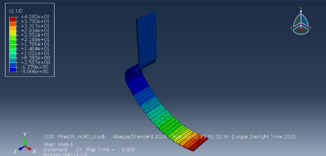

Running blade in composite material
Design and analysis of a composite material running blade.
Project Overview
The aim of this study was to design an object using composite materials for structural applications.
After creating a CAD model in SolidWorks based on literature and commercial models, the blade was imported in Abaqus CAE for a static analysis.
Here, different configurations were compared, in order to obtain a behavior as close as possible to the real one. Among the studied chacacteristics were:
material, number and orientation of plies and simulation parameters (mesh, simulation time). In particular, carbon fiber and glass fiber were
evaluated, using aluminium as a comparison representing for more "classical" materials.
The final behavior was analyzed through stress and strain distribution and peak values.
Since a possible manufacturing method was also proposed, a final general cost evaluation for production was presented.
Methodology
Following measures of commercial models already established on the market and studies of similar nature, a CAD model for the running blade was created. The total thickness of the blade
was not imposed, since it was expected to change depending on the chosen material.
This model was imported in Abaqus CAE to perform a FEA: for this objective, different number, configuration and orientation of plies were evaluated before defining
appropriate boundary conditions and mesh.


Results
All materials experienced maximum stress values and concentration in the main curve of the blade, as was expected from a preliminary quantitative analysis.
The goal of the study was to reach a target displacement value on the tip, without an excessive thickness: the best result was obtained by carbon fiber, which
allowed for a realistic displacement while keeping the total weight to bearable values.
Using approximates for production costs and final customer price, glass fiber showed the lowest production cost (with Prepreg-Vacuum Bagging as manufacturing
method).
